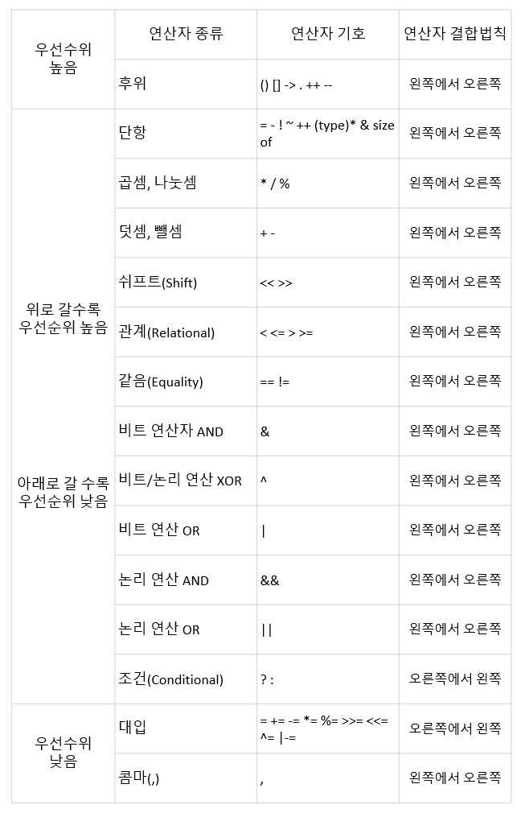

연산자
연산자란 연산을 수행하기 위한 기호을 의미하고, 피연산자는 연산을 행해지는 대상을 의미한다.
- 산술 연산자
- + : 왼쪽항에 오른쪽항을 더한다
- - : 왼쪽항에 오른쪽항을 뺀다
- * : 왼쪽항에 오른쪽항을 곱한다
- / : 왼쪽항에 오른쪽항을 나눈다
- % : 왼쪽항에 오른쪽항을 나눈 나머지
- + : 왼쪽항에 오른쪽항을 더한다
- 대입 연산자
- = : 왼쪽항에 오른쪽항을 대입
- += : 왼쪽항과 오른쪽항을 더한 값을 왼쪽항에 대입
- -= : 왼쪽항과 오른쪽항의 뺀 값을 왼쪽항에 대입
- *= : 왼쪽항과 오른쪽항의 값을 곱한 값을 왼쪽항에 대입
- /= : 왼쪽항에 오른쪽항을 나눈 값을 왼쪽항에 대입
- %= : 왼쪽항에 오른쪽항을 나누고 난후의 나머지를 왼쪽항에 대입
- = : 왼쪽항에 오른쪽항을 대입
- 증감 연산자
- x++ : 연산을 진행한 후에 x의 값에 1을 더한다
- ++x : x의 값에 1을 더한 후에 연산을 진행한다
- x– : 연산을 진행한 후에 x의 값에 1을 뺀다
- –x : x의 값에 1을 뺀 후에 연산을 진행한다
- x++ : 연산을 진행한 후에 x의 값에 1을 더한다
연산자 우선순위
연산자에서도 수학에서 +보다 *가 먼저 계산하듯이 우선순위가 있다.
- 연산자의 우선순위
<p align="center">

출처: https://blcan.tistory.com/16
여기서 말하는 연산자 결합법칙의 의미는 연산자의 우선순위가 같을 때 연산자의 진행방향을 뜻한다